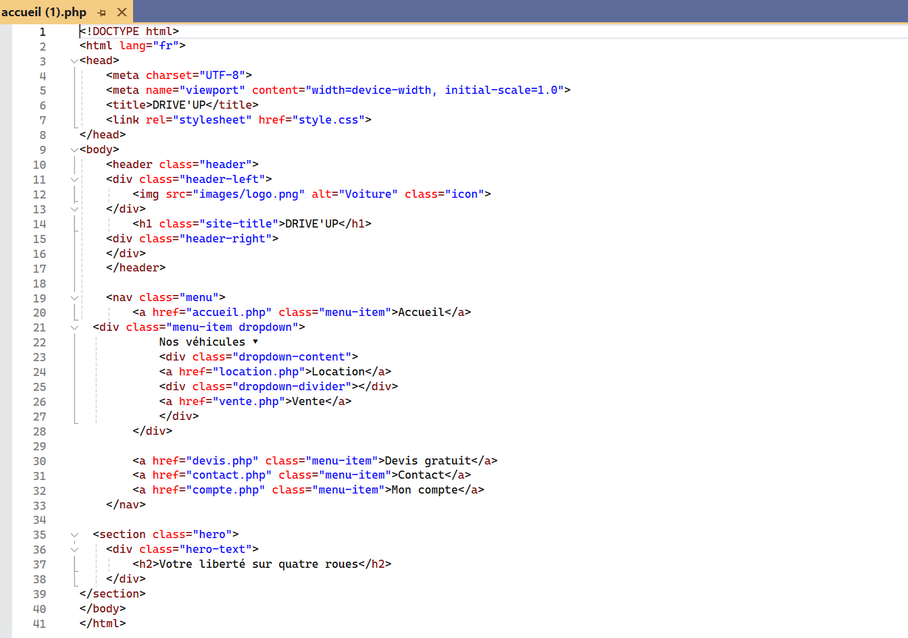
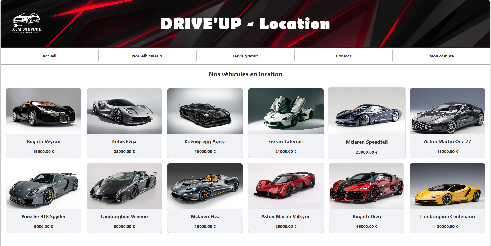
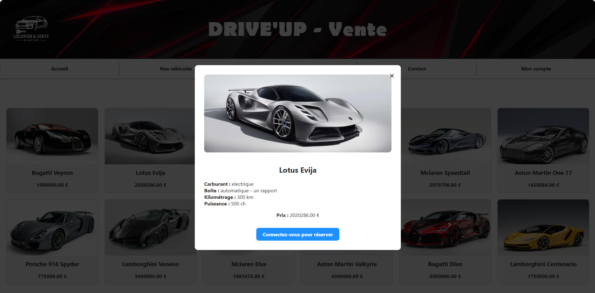
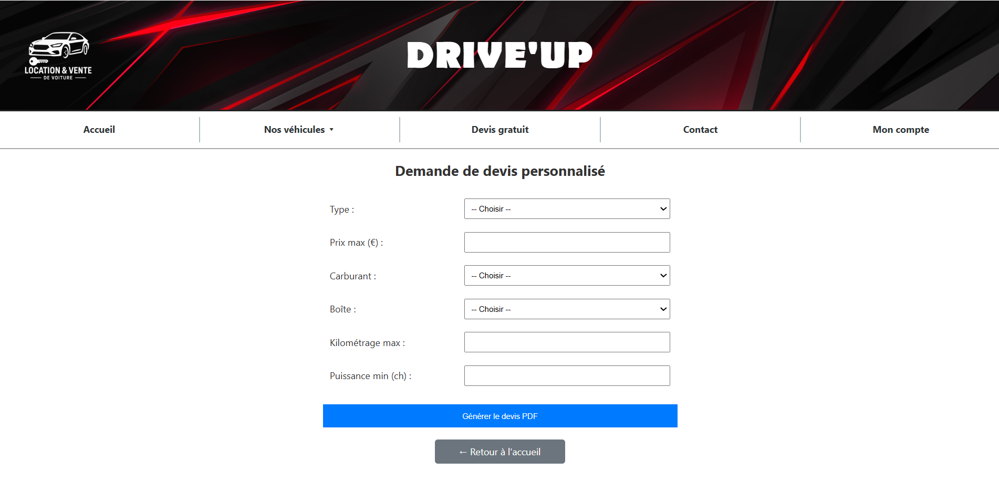
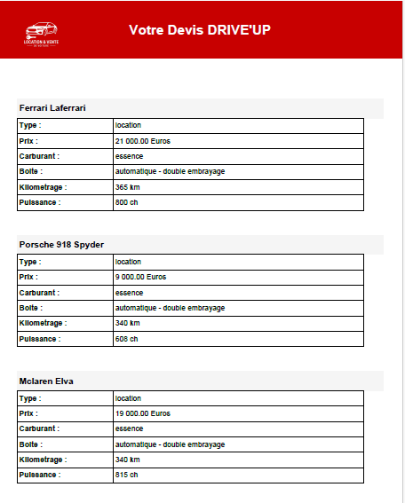
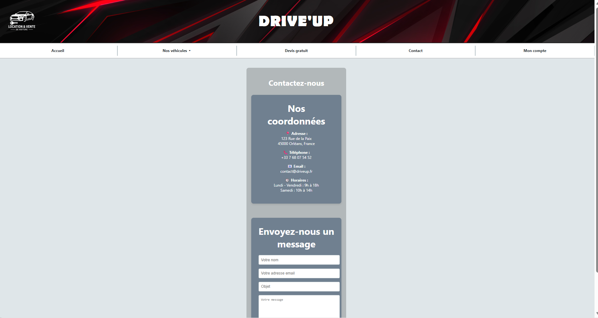
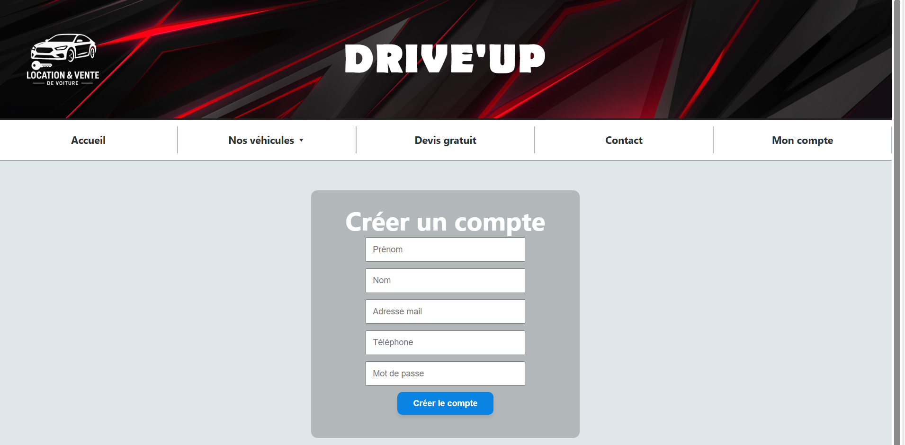
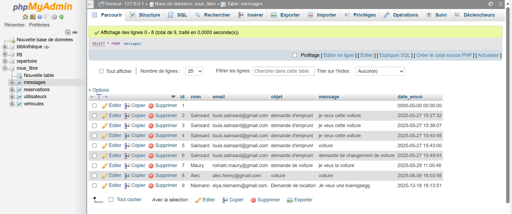

Projet 03 · Programmation
Création d'un site web de vente et location de véhicules
Dans le cadre d’un projet informatique à Polytech, j'ai conçu et réalisé un site web avec pour objectif de permettre l'achat ou la location d'un véhicule. Cette page présente les grandes étapes du projet.
Utilisation du langage HTML, CSS et PHP
Durant mes années à Polytech, j'ai étudié différents types de langages de codage. Pour ce projet j'ai utilisé mes bases en HTML, CSS et PHP pour créer mon site.
Le langage HTML permet de construire le contenu de mon site web. A l'aide de différentes balises, je crée les parties de mon site et renseigne les informations à entrer. Le langage HTML est lié au CSS. Le CSS me permet de construire le design de ma page, comme placer des conteneurs, en centrant le texte, variant les polices et tailles d'écritures, et placer les images aux bons endroits.
Le PHP permet de lier mon programme à une base de données sur mon PC. C'est sur cette base que les informations personnelles sont traitées. En lien avec mon site web de véhicules, ma base de données va recenser les véhicules, gérer les créations de comptes, les mots de passe, et permet même de lire les messages qui sont envoyés par les utilisateurs. Le PHP fait donc ce lien entre la base de données et le site.

Exemple de code de mon site de la page d'accueil (HTML)
Différentes pages de mon site
Je vais vous détailler les fonctionnalités des différentes pages de mon site web. Je présente aussi ce projet sur ma vidéo de présentation que je vous invite à regarder.
1- Page d'accueil

Cette page présente le site web et contient tous les liens nécessaires à la navigation à travers le site pour réaliser sa location ou son achat.
2- Location

On retrouve ici la page de location des véhicules. Il y a les différents choix des véhicules et la possibilité en cliquant sur l'un d'eux d'avoir les détails du prix et des caractéristiques de la voiture.'
3- Vente

Cette page est codée de la même façon que la précédente. J'ai mis en avant sur l'image les caractéristiques de l'un des véhicules. Ici, l'utilisateur ne s'étant pas identifié, on l'invite à se connecter via la page compte. Une fois connecté, il pourra alors effectuer son achat.
4- Devis

Cette page a pour objectif d'aider l'utilisateur à faire son choix. En fonction de ce qu'il recherche un devis lui sera proposé avec les voitures correspondantes à ses critères. Un PDF est automatiquement généré à la fin de ses choix.

Exemple de Devis généré via des critères choisis
5- Contact

On retrouve sur cette page les contacts qui sont inventés, ce site ayant pour but d'être simplement un site de démonstration. La partie message envoie ce dernier directement sur la base de données à laquelle seul l'administrateur a accès.
6- Compte
.png)
Sur cette page, l'utilisateur a la possibilité de créer son compte ou de se connecter. S'il crée son compte, celui-ci va être stocké dans la base de données, il aura alors la possibilité ensuite de se connecter. Une fois connecté, il pourra faire sa réservation ou son achat.

Ma base de données
Elle recense donc les données du site web. Elle est nommée roue_libre (ancien nom de mon site) et est constituée de tables qui représentent toutes les données du site. A chaque modification, la base de données se met à jour automatiquement. Sur l'image, on voit donc la table des messages avec tous les messages de tests envoyés.
